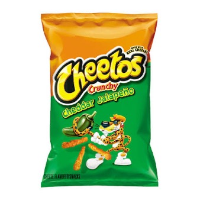
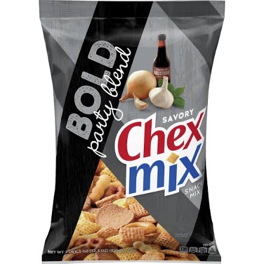
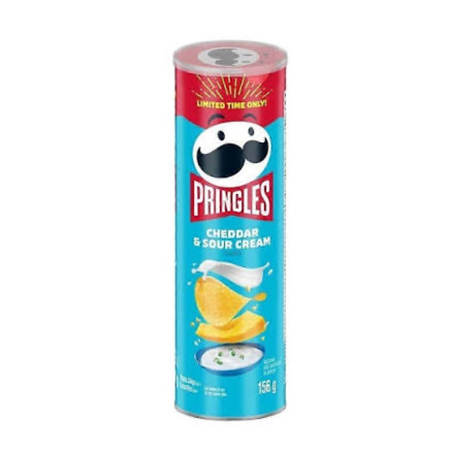
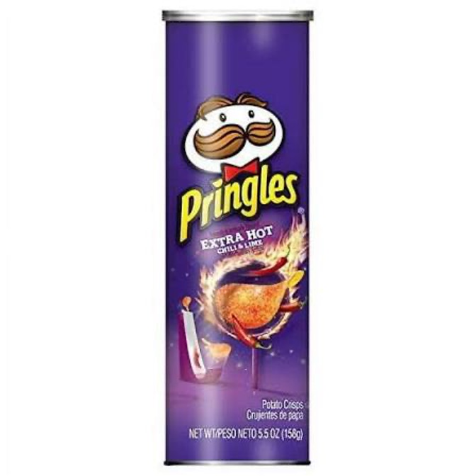

Home
Top 5 Foods
Top 5 Snacks
Top 5 Desserts
Home
Top 5 Foods
Top 5 Snacks
Top 5 Desserts
Top 5 Snacks I Like

If you’ve never had these you are missing out.

Regular chex mix is good enough as it is, but with the bold flavor, it just takes it to a whole new level. I love the garlicy flavors in it.

Pringles are the most addicting chips to eat, it’s the type of snack where if you have no self-control you end up eating the whole can. This combined with the cheddar & sour cream flavor makes it an amazing snack.

I love the spice on these chips, it’s the right level of heat as to not overpower the flavors, but to still feel the burn on your tongue. Unfortunately these pringles got discontinued for some stupid reason.

I love me some dill pickle chips. I’m a pickle fan in general so of course I like these, but with those flavors combined into a crisp chip, it just makes it even better.